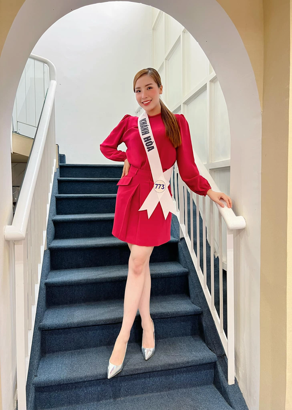

So sánh nhan sắc của 4 nữ ca sĩ ngày trước: Hà Hồ phát hào quang, Đông Nhi nhìn khá hiền
Hoa hậu Thùy Tiên diện bikini giá rẻ mà vẫn sang chảnh hết sức: Quan trọng là thần thái!
Trước đó, vào tháng 1/2019, trên facebook cá nhân, Đặng Thùy Trang - chị gái Hoa hậu Đại dương Đặng Thu Thảo đã đăng tải bài viết dài tố Á hậu biển Khánh Phương đã vay nợ và quỵt tiền cô chưa chịu trả.
Theo bà Thùy Trang, Khánh Phương đã vay cô 300 triệu để đi thi Hoa hậu Biển Việt Nam 2016. Số tiền này để mua giày dép, quần áo tư trang và vé máy bay, khách sạn, tiền truyền thông. Nàng á hậu Biển Việt Nam 2016 hứa hẹn, sau cuộc thi sẽ làm việc, trả cho Thùy Trang bằng hợp đồng ràng buộc hình ảnh 2 bên có giá trị 1 tỷ 500 triệu.
Bà Đặng Thùy Trang từng đăng tải bài viết dài tố Á hậu Khánh Phương nợ tiền, quỵt tiền
Bà Thùy Trang còn cho hay, sau cuộc thi, bà còn giúp Khánh Phương lo phẫu thuật thẩm mỹ để ngoại hình đẹp hơn để đi sự kiện lấy tiền trả nợ. Sau khi phẫu thuật thẩm mỹ thành công, Khánh Phương nổi tiếng hơn và đắt show sự kiện hơn. Thế nhưng, cũng ở giai đoạn này, Khánh Phương đơn phương hủy hợp đồng và hứa hẹn sẽ trả đủ tiền cho bà Thùy Trang trong 1 năm. Điều này được bà Thùy Trang đồng ý.
Tuy nhiên, theo bà Trang, chỉ được 4 tháng thì Khánh Phương không trả nợ nữa. Ngoài ra, Thùy Trang cũng tiết lộ Khánh Phương đã nhờ cô mượn thêm 1 tỷ đồng để mua bình chọn cho mình khi tham gia Hoa hậu Siêu quốc gia 2017 nhưng bà Thùy Trang từ chối vì những lần thất hứa trả tiền trước của Khánh Phương.
Trước đó, nàng Á hậu cũng rơi vào lùm xùm bị tố nợ tiền, quỵt tiền
Không thể chấp nhận được thái độ của Khánh Phương, chị gái Đặng Thu Thảo quyết định đăng đàn để làm rõ tất cả.
"Đến ngày hôm qua, 3/1/2019, sau khi mọi việc vỡ lở, Khánh Phương mới chủ động liên hệ với tôi và nói rằng sẽ trả toàn bộ số tiền trong êm đẹp trước ngày 20/1/2019. Cô ấy yêu cầu tôi hãy gỡ những thông tin trên mạng xã hội xuống để tránh gây ảnh hưởng và tôi đồng ý", Thùy Trang nói thêm.
Khi được hỏi về việc sẽ giải quyết thế nào nếu sau ngày 20/1 vẫn không nhận được số tiền từ Khánh Phương, Thùy Trang cho biết sẽ nhờ đến pháp luật giải quyết.
Sau khi vụ việc đấu tố diễn ra không lâu, Á hậu Khánh Phương chia sẻ dòng trạng thái gây chú ý trên trang cá nhân: "Cuộc đời là bọt nước. Chỉ có hai điều như đá tảng: Tư thế khi người khác lâm nạn và can đảm trong hoạn nạn của chính mình".
Thời gian gần đây, khi vụ việc Thùy Tiên bị bà Đặng Thùy Trang khởi kiện trở nên ồn ào, Á hậu Khánh Phương một lần nữa đã bị réo tên vào câu chuyện này. Nhiều người cũng không khỏi tò mò, tình trạng giữa bà Đặng Thùy Trang và Á hậu Khánh Phương hiện tại ra sao?
Không để nhiều người phải đoán già đoán non, bà Đặng Thùy Trang đã lên tiếng cho biết: "Trước ngày Khánh Phương đi tu, tôi với em vẫn hợp tác vui vẻ, em là cô gái đơn giản và hiểu chuyện. Tôi vẫn thương em và vẫn luôn giúp em trong công việc. Đến giờ em vẫn luôn biết ơn và chúc tết tui".
Khánh Phương sinh năm 1995, cao 1,68 m, nặng 51 kg với số đo ba vòng 85-65-95. Cô từng theo học ngành Quản trị kinh doanh của Đại học Nha Trang.
Người đẹp từng được biết đến khi đạt danh hiệu Á hậu 2 Hoa hậu Biển Việt Nam 2016. Năm 2017, Khánh Phương là đại diện của Việt Nam tham dự cuộc thi Miss Supranational - Hoa hậu Siêu quốc gia và lọt vào top 25 chung cuộc.
Trước đó, Á hậu Khánh Phương gây bất ngờ khi quyết định xuống tóc đi tu
Tháng 8/2022, Á hậu Khánh Phương khiến nhiều người bất ngờ với hình ảnh xuống tóc đi tu, bởi trước đó không lâu, nàng còn tham gia cuộc thi Hoa hậu Hoàn vũ Việt Nam 2022. Người đẹp này bị loại trong quá trình ghi hình truyền hình thực tế, để tuột mất cơ hội ghi danh vào Top 41 thí sinh xuất sắc tranh tài trong đêm chung kết.
Chia sẻ với báo chí về quyết định đi tu của mình, Á hậu Khánh Phương cho biết, việc xuống tóc là quyết định mà cô ấp ủ đã từ lâu. Bên cạnh đó, nàng Á hậu chỉ xuất gia gieo duyên, tu học trong một tháng. Việc đi tu này nhằm giúp Khánh Phương trưởng thành, nhìn nhận mọi điều một cách nhẹ nhàng và yêu thương hơn.
Cô tu học trong 1 tháng để tự chữa lãnh những tổn thương trong quá khứ
Từng chia sẻ với báo chí về kế hoạch sau khi hoàn thành khóa tu, Khánh Phương noi: ‘’Trước mắt tôi dành toàn bộ thời gian và tâm trí để tu học một cách nghiêm túc. Vì sau quá trình đi học về tâm lý, tôi nhận thấy thiền định có khả năng giúp cho con người tự chữa lành, tăng trưởng nội lực và cải thiện sức khoẻ.
Bản thân tôi đã thay đổi nhờ đây, nên tôi muốn tu tập miên mật (không gián đoạn) để tự trau dồi. Đến thời điểm phù hợp, tôi sẽ giúp đỡ, cống hiến thật nhiều cho cộng đồng xã hội bằng những kinh nghiệm và kiến thức mình đã tích góp được trong thời gian tu học này’’.
Xem thêm: